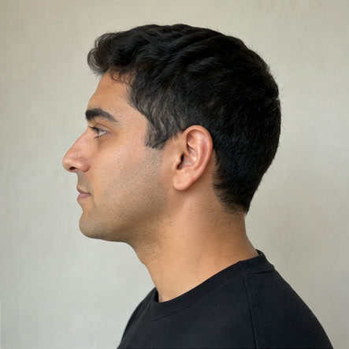
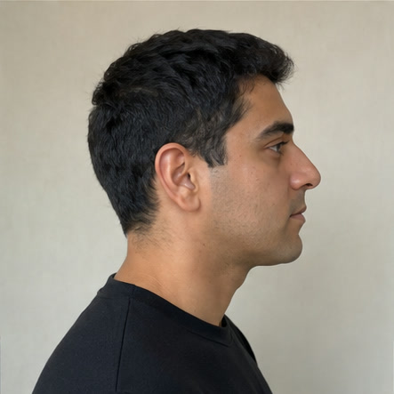

Photos for reviewing u u
These six portraits show one fictional adult created with image generation solely as test data for App Review. They do not depict a real person.
Before opening u u, touch and hold each image below and choose “Save to Photos.” Then select all six when u u asks for photos.

